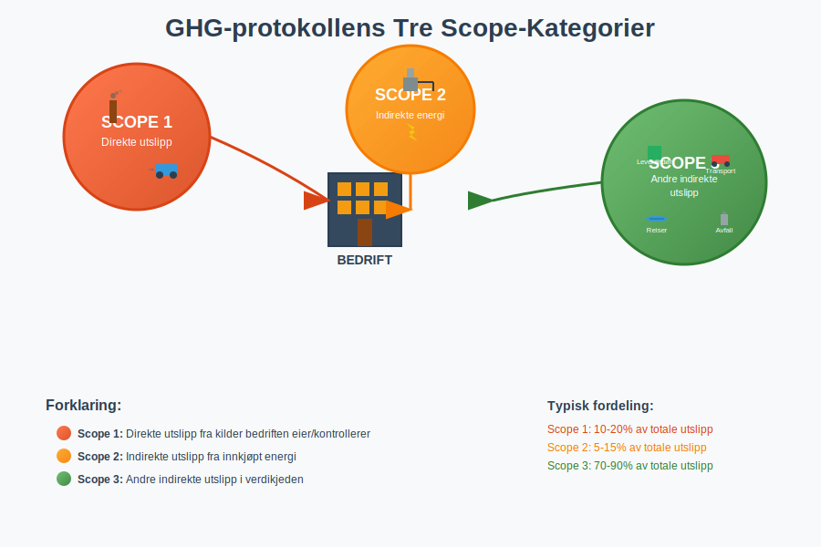
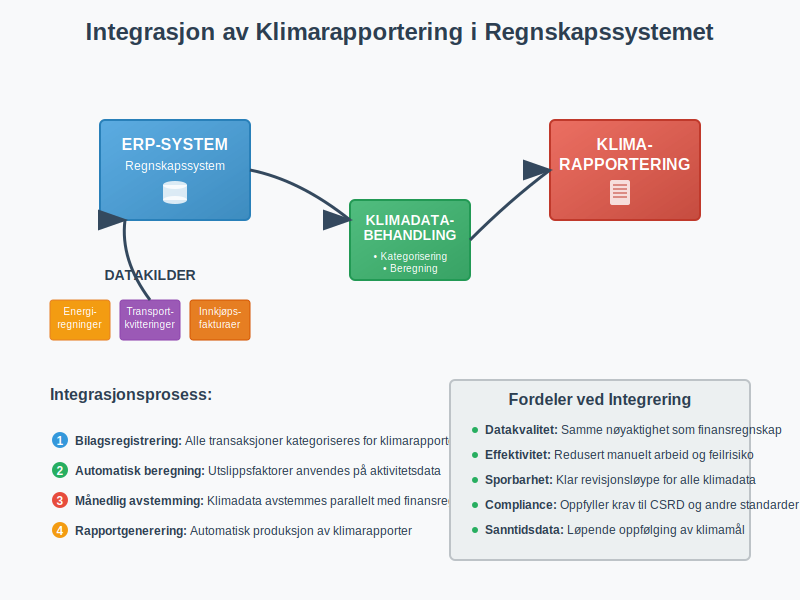
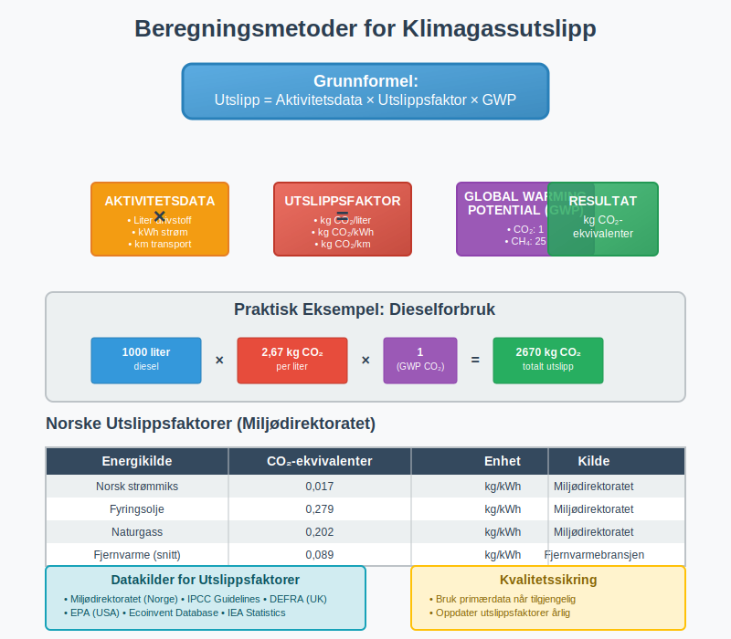
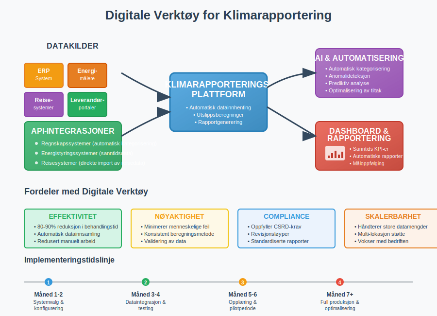

GHG-protokollen (Greenhouse Gas Protocol) er den mest anerkjente internasjonale standarden for måling og rapportering av klimagassutslipp fra bedrifter og organisasjoner. Protokollen ble utviklet av World Resources Institute (WRI) og World Business Council for Sustainable Development (WBCSD), og fungerer som grunnlaget for klimarapportering i ESG-regnskap og bærekraftsrapportering.
For norske bedrifter blir GHG-protokollen stadig viktigere, spesielt i lys av nye rapporteringskrav som CSRD (Corporate Sustainability Reporting Directive), som krever systematisk klimarapportering fra større selskaper.
Seksjon 1: De Tre Scope-Kategoriene
GHG-protokollen deler klimagassutslipp inn i tre hovedkategorier, kalt “scopes”, som gir en strukturert tilnærming til å identifisere og måle utslipp gjennom hele verdikjeden.

Scope 1: Direkte Utslipp
Scope 1 omfatter alle direkte klimagassutslipp fra kilder som bedriften eier eller kontrollerer direkte. Dette inkluderer:
- Forbrenning i egne anlegg (fyring, produksjon)
- Bedriftens kjøretøyflåte og maskiner
- Industrielle prosesser og kjemiske reaksjoner
- Lekkasjer fra kjøleanlegg og klimaanlegg
Disse utslippene er ofte de enkleste å måle og kontrollere, da bedriften har direkte tilgang til forbruksdata og kan implementere tiltak for reduksjon.
Scope 2: Indirekte Energiutslipp
Scope 2 dekker indirekte utslipp fra innkjøpt energi som bedriften forbruker, primært:
- Elektrisitet fra strømnettet
- Fjernvarme og fjernkjøling
- Damp til industrielle prosesser
Selv om bedriften ikke direkte produserer disse utslippene, er de en konsekvens av bedriftens energiforbruk og kan påvirkes gjennom energieffektivisering og valg av fornybare energikilder.
Scope 3: Andre Indirekte Utslipp
Scope 3 er den mest omfattende kategorien og inkluderer alle andre indirekte utslipp i bedriftens verdikjede. Dette omfatter 15 underkategorier, inkludert:
- Innkjøpte varer og tjenester
- Transport og distribusjon (oppstrøms og nedstrøms)
- Forretningsreiser og pendling
- Avfallshåndtering
- Bruk og avhending av solgte produkter
- Investeringer og finansieringsaktiviteter
Scope 3 utgjør ofte 70-90% av en bedrifts totale klimafotavtrykk, men er samtidig den mest utfordrende å måle og påvirke.
Seksjon 2: Implementering i Regnskapet
Klimarapportering etter GHG-protokollen krever systematisk datainnsamling og dokumentasjon som må integreres med bedriftens eksisterende regnskapssystemer og internkontroll.

Datainnsamling og Dokumentasjon
Effektiv klimarapportering krever samme grad av nøyaktighet og dokumentasjon som finansiell rapportering:
- Systematisk bilagsføring: Alle energiregninger, transportkvitteringer og innkjøpsfakturaer må kategoriseres for klimarapportering
- Månedlig avstemming: Regelmessig oppfølging av utslippsdata parallelt med månedlig regnskapsavslutning
- Revisjonsløyper: Klar dokumentasjon av beregningsmetoder og datakilder for ekstern verifikasjon
Integrasjon med ERP-systemer
Moderne ERP-systemer kan konfigureres til å automatisk kategorisere transaksjoner for klimarapportering:
| Transaksjonskategori | Scope-klassifisering | Automatisk beregning |
|---|---|---|
| Drivstoffkjøp | Scope 1 | Liter × utslippsfaktor |
| Strømregninger | Scope 2 | kWh × nettmiks-faktor |
| Flyreiser | Scope 3 | Distanse × utslippsfaktor |
| Innkjøp av varer | Scope 3 | Beløp × sektorfaktor |
Seksjon 3: Rapporteringskrav og Standarder
I Norge er klimarapportering regulert gjennom flere regelverk som bygger på GHG-protokollen som grunnlag.
CSRD og EU-taksonomi
For større norske selskaper gjelder CSRD-direktivet, som krever:
- Årlig klimarapportering integrert i årsrapporten
- Dobbel vesentlighet: Både finansiell påvirkning og miljøpåvirkning
- Ekstern revisjon av bærekraftsrapportering
- Digitale rapporteringsformater (XBRL-basert)
Norske Rapporteringskrav
Norske myndigheter har implementert flere krav som påvirker klimarapportering:
- Regnskapsloven § 3-3c: Krav til redegjørelse for samfunnsansvar
- Åpenhetsloven: Rapportering om menneskerettigheter og arbeidsforhold
- Grunnrenteskatt: Spesielle krav for petroleumssektoren
Seksjon 4: Beregningsmetoder og Utslippsfaktorer
Nøyaktig beregning av klimagassutslipp krever bruk av anerkjente utslippsfaktorer og beregningsmetoder.

Aktivitetsbasert Tilnærming
Den mest vanlige metoden er aktivitetsbasert beregning:
Utslipp = Aktivitetsdata × Utslippsfaktor × Oppvarmingspotensial
Eksempel på beregning:
- Forbruk av diesel: 1000 liter
- Utslippsfaktor diesel: 2,67 kg CO₂/liter
- Totalt CO₂-utslipp: 1000 × 2,67 = 2670 kg CO₂
Norske Utslippsfaktorer
Miljødirektoratet publiserer årlig oppdaterte utslippsfaktorer for Norge:
| Energikilde | CO₂-ekvivalenter (kg/kWh) | Kilde |
|---|---|---|
| Norsk strømmiks | 0,017 | Miljødirektoratet |
| Fyringsolje | 0,279 | Miljødirektoratet |
| Naturgass | 0,202 | Miljødirektoratet |
| Fjernvarme (snitt) | 0,089 | Fjernvarmebransjen |
Usikkerhet og Kvalitetssikring
Som i finansiell rapportering må klimarapportering håndtere usikkerhet:
- Datakilder: Prioriter primærdata over estimater
- Konservatisme: Velg høyere estimater ved usikkerhet
- Sensitivitetsanalyse: Test påvirkning av ulike forutsetninger
- Årlig oppdatering: Revidér beregningsmetoder og faktorer
Seksjon 5: Klimamål og Reduksjonsstrategier
Etter kartlegging av utslipp må bedrifter sette vitenskapelig baserte klimamål og implementere reduksjonsstrategier.
Science Based Targets (SBT)
Science Based Targets-initiativet gir rammer for klimamål som er i tråd med Parisavtalens 1,5°C-mål:
- Kortsiktige mål: 5-10 års reduksjon (minimum 4,2% årlig)
- Langsiktige mål: Netto null utslipp innen 2050
- Scope-dekkning: Mål for alle relevante scope-kategorier
Reduksjonsstrategier per Scope
Scope 1 reduksjoner:
- Energieffektivisering av bygninger og prosesser
- Overgang til fornybare energikilder
- Elektrifisering av transport og maskiner
- Optimalisering av industrielle prosesser
Scope 2 reduksjoner:
- Kjøp av fornybar strøm (grønne sertifikater)
- Installasjon av solceller og vindkraft
- Energieffektivisering og smart styring
- Bytte til leverandører med ren energi
Scope 3 reduksjoner:
- Leverandørkrav og samarbeid om reduksjoner
- Sirkulære forretningsmodeller
- Optimalisering av transport og logistikk
- Produktdesign for lavere klimafotavtrykk
Seksjon 6: Økonomiske Implikasjoner
Klimarapportering etter GHG-protokollen har betydelige økonomiske implikasjoner som må reflekteres i bedriftens finansregnskap.
Kostnader ved Implementering
Implementering av systematisk klimarapportering medfører flere kostnadskategorier:
- Systemkostnader: Oppgradering av ERP-systemer for klimadatahåndtering
- Konsulentbistand: Ekstern hjelp til etablering av prosesser og beregningsmetoder
- Personalkostnader: Opplæring og dedikerte ressurser til klimarapportering
- Verifikasjonskostnader: Ekstern revisjon og sertifisering av klimadata
Klimarelaterte Finansielle Risikoer
GHG-protokollen hjelper bedrifter å identifisere og kvantifisere klimarelaterte finansielle risikoer:
| Risikotype | Beskrivelse | Regnskapsmessig behandling |
|---|---|---|
| Overgangsrisiko | Kostnader ved CO₂-avgifter og reguleringer | Avsetninger for fremtidige avgifter |
| Fysisk risiko | Skader fra klimaendringer | Nedskrivning av anleggsmidler |
| Omdømmerisiko | Tap av kunder og investorer | Nedskrivning av goodwill |
| Markedsrisiko | Endrede forbrukerpref. | Nedskrivning av varelager |
Investeringsmuligheter
Samtidig skaper klimaomstillingen nye forretningsmuligheter:
- Grønne investeringer: Fornybar energi og energieffektivisering
- Nye markeder: Produkter og tjenester for lavutslippssamfunnet
- Kostnadsbesparelser: Redusert energiforbruk og materialbruk
- Tilgang til kapital: Grønn finansiering og bærekraftslån
Seksjon 7: Digitale Verktøy og Automatisering
Moderne klimarapportering krever digitale løsninger for effektiv datainnsamling og rapportering.

Integrerte Rapporteringsplattformer
Flere leverandører tilbyr spesialiserte løsninger for GHG-rapportering:
- Automatisk datainnhenting fra regnskapssystemer og energimålere
- Forhåndsdefinerte utslippsfaktorer for ulike bransjer og regioner
- Rapporteringsmaler for ulike standarder (GHG, CDP, TCFD)
- Dashboards og visualisering for oppfølging av klimamål
API-integrasjoner
Moderne klimarapporteringsverktøy kan integreres med eksisterende systemer:
- Regnskapssystemer: Automatisk kategorisering av transaksjoner
- Reisesystemer: Direkte import av reisedata for Scope 3-beregninger
- Energistyringssystemer: Sanntidsdata fra smarte målere
- Leverandørportaler: Innhenting av Scope 3-data fra verdikjeden
Kunstig Intelligens og Maskinlæring
AI-teknologi kan forbedre nøyaktigheten i klimarapportering:
- Automatisk kategorisering av transaksjoner basert på beskrivelse
- Anomalideteksjon for å identifisere unormale utslippsmønstre
- Prediktiv analyse for å forutsi fremtidige utslipp
- Optimalisering av reduksjonstiltak basert på kostnads-nytte-analyse
Seksjon 8: Fremtidige Utviklingstrekk
GHG-protokollen utvikles kontinuerlig for å møte nye utfordringer og krav i klimarapportering.
Utvidede Rapporteringskrav
Flere jurisdiksjoner innfører obligatorisk klimarapportering:
- EU-taksonomi: Klassifisering av bærekraftige økonomiske aktiviteter
- TCFD-implementering: Klimarelaterte finansielle risikoer
- Scope 3-utvidelse: Strengere krav til verdikjederapportering
- Sektorspesifikke standarder: Tilpassede krav for ulike bransjer
Teknologisk Utvikling
Nye teknologier vil forenkle og forbedre klimarapportering:
- Blokkjede-teknologi: Sporbarhet av utslipp gjennom verdikjeder
- IoT-sensorer: Sanntidsmåling av utslipp og energiforbruk
- Satellittdata: Verifisering av utslippsrapporter
- Digital tvillinger: Modellering av klimapåvirkning fra forretningsaktiviteter
Finansiell Integrering
Klimarapportering vil bli stadig mer integrert med finansiell rapportering:
- Integrerte rapporter: Kombinert finansiell og bærekraftsrapportering
- Klimajusterte regnskaper: Justering av balanseførte verdier for klimarisiko
- Karbonprising: Internprising av CO₂-utslipp i investeringsbeslutninger
- ESG-måltall: Kobling mellom klimamål og lederkompensasjon
GHG-protokollen representerer et paradigmeskifte i hvordan bedrifter måler og rapporterer sin miljøpåvirkning. For norske bedrifter er det essensielt å etablere robuste systemer for klimarapportering som både oppfyller regulatoriske krav og støtter strategiske beslutninger for bærekraftig verdiskaping.
Implementering av GHG-protokollen krever samme grad av systematikk og nøyaktighet som tradisjonell regnskapsføring, men åpner samtidig for nye muligheter til å skape verdi gjennom bærekraftig forretningsutvikling.